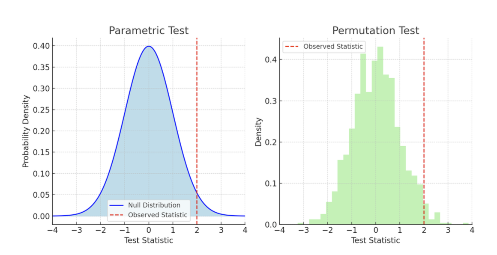
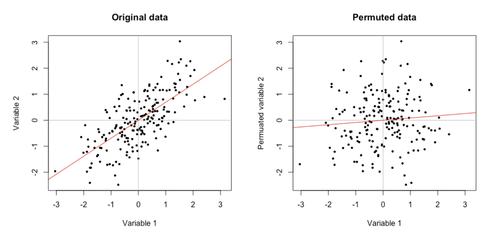
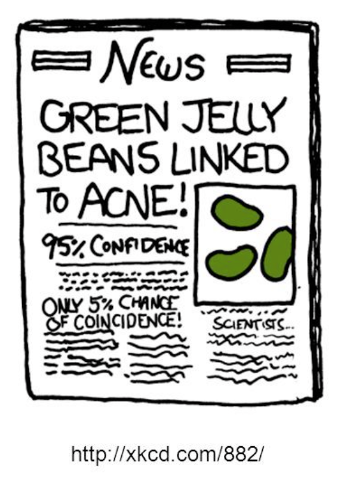
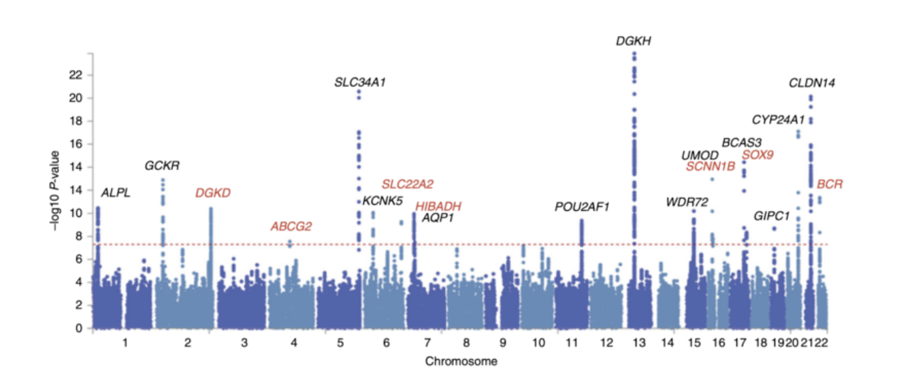
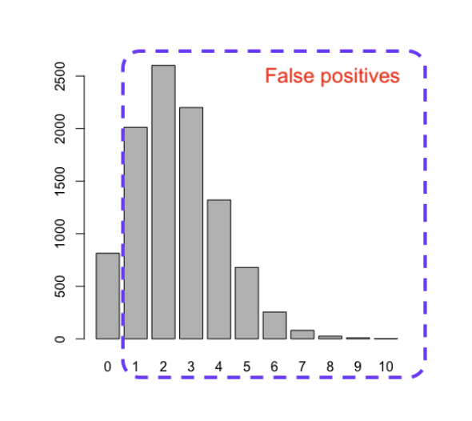
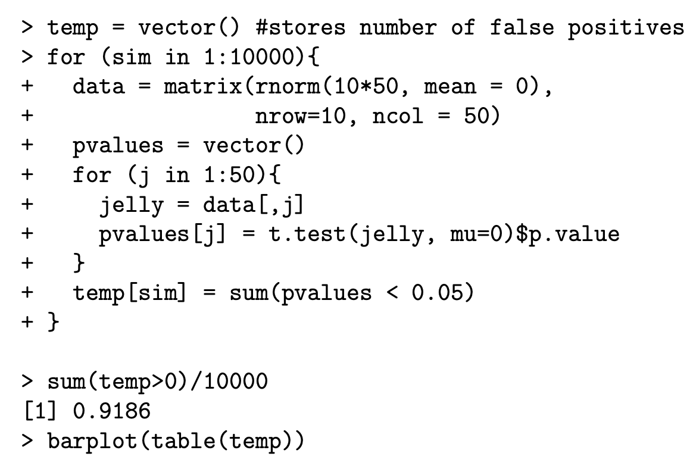
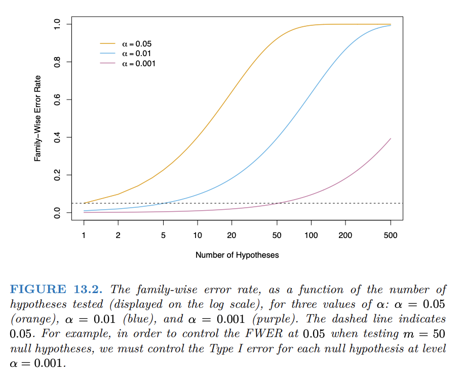

Week 2
To review the topics we discussed from last lecture, we will do an activity. In this week’s announcement I asked you all to read the paper “Chocolate with high Cocoa content as a weight-loss accelerator” by Bohannon et al.
With 2-3 other people around you, go through the paper (a pdf can be found on the course website) and think about the following questions:
By the end of this lecture, you should be able to:
Researchers have developed a new drug that inhibits a mouse’s ability to run through a maze. Using three mice receiving the drug and three controls receiving a placebo, they measured the time required to complete the maze.
| Group | Running times (seconds) |
|---|---|
| Drug | 30, 25, 20 |
| Placebo | 18, 21, 22 |
We want to test
\[ H_0:\mu_{\text{Drug}}=\mu_{\text{Placebo}} \qquad \text{versus} \qquad H_1:\mu_{\text{Drug}}>\mu_{\text{Placebo}}. \]
The two-sample \(t\)-test gives a \(p\)-value of approximately \(0.122\).
With such a small sample, the parametric \(p\)-value may be unreliable.
Can we test the hypothesis without relying as heavily on parametric assumptions?
A permutation test is a non-parametric method that tests a null hypothesis by “rearranging” the observed data.
Key Idea: If \(H_0\) is true (there is no difference between the population means) then swapping the group labels should not make a systematic difference.
Shuffle the group labels while keeping three observations in each group.
| Permutation | Drug | Placebo | \(\widehat\mu_D-\widehat\mu_P\) | \(t\) statistic |
|---|---|---|---|---|
| 1 (observed) | 30, 25, 20 | 18, 21, 22 | 4.67 | 1.49 |
| 2 | 30, 25, 18 | 20, 21, 22 | 3.33 | 2.11 |
| 3 | 30, 25, 21 | 18, 20, 22 | 5.33 | 2.76 |
| \(\vdots\) | \(\vdots\) | \(\vdots\) | \(\vdots\) | \(\vdots\) |
| 20 | 18, 21, 22 | 30, 25, 20 | -4.67 | -1.49 |
There are three permutations whose differences in means are at least \(4.67\):
\[ p_{\text{perm}}=\frac{3}{20}=0.15. \]
Using the \(t\) statistic gives the same result: three permuted statistics are at least \(1.49\).

Parametric and permutation tests differ mainly in how they obtain the null distribution (the distribution of the test statistic under \(H_0\)).
Suppose we are testing \(H_0:\rho_{XY}=0\) for the simple linear regression \(Y\sim X\).
Under \(H_0\), we can randomly shuffle the order of \(X\) to break its relationship with \(Y\) while preserving the observed values of both variables.

Consider
\[ y_i=\beta_0+x_i\beta_1+z_i\beta_2+w_i\beta_3+\epsilon_i, \qquad H_0:\beta_1=\beta_2=0. \]
Here, \(\beta_1\) and \(\beta_2\) describe the effects of \(x_i\) and \(z_i\) on \(E(Y_i)\) while controlling for \(w_i\).
Possible methods to shuffle:
Do jelly beans cause acne?
This is a pedagogical example, not an actual study.
Question: What problem might arise?


Howles, S. A., Wiberg, A., Goldsworthy, M., Bayliss, A. L., Gluck, A. K., Ng, M., … & Furniss, D. (2019). Genetic variants of calcium and vitamin D metabolism in kidney stone disease. Nature communications, 10(1), 5175.
In this experiment:
Bennett, C. M., Miller, M. B., & Wolford, G. L. (2009). Neural correlates of interspecies perspective taking in the post-mortem Atlantic Salmon: An argument for multiple comparisons correction. Neuroimage, 47(Suppl 1), S125.
Several apparently active voxels were identified using \(\alpha = 0.001\) inside the salmon’s brain cavity, even though no voxel should truly activate.
Question: What went wrong?
Lyon, L. (2017). Dead salmon and voodoo correlations: should we be sceptical about functional MRI?. Brain, 140(8), e53-e53.
Generate data for 50 jelly bean colours when every null hypothesis is true. Test each colour separately at \(\alpha=0.05\).
To estimate how often the \(p<0.05\) rule produces at least one false positive:

When there are 50 jelly beans and \(p < 0.05\) rule is applied, there is a \(92\%\) chance that at least one false positive jelly bean is detected.

Two common ways to address multiple comparisons are:
The choice between FWER and FDR should depend on the research context and the goal of the analysis.
If 20 independent null hypotheses are each tested at \(\alpha=0.05\), then
\[ \begin{aligned} P(\text{at least one false positive}) &= 1 - P(\text{no false positives}) \\ &= 1 - (1 - 0.05)^{20} \\ &= 1 - (0.95)^{20} \\ &\approx 1 - 0.3585 \\ &\approx 0.6415. \end{aligned} \]

To control the FWER at level \(\alpha\) across \(m\) tests, use the per-test threshold \(\alpha^*=\frac{\alpha}{m}.\)
Recall that \(P(A \cup B) \leq P(A) + P(B)\).
Then, the FWER would be:
\[ \begin{aligned} \operatorname{FWER} &= P_{H_0}(\text{at least one of the $m$ null hypotheses is rejected}) \\ &= P_{H_0}\left( \bigcup_{j=1}^{m} \left\{p_j \leq \frac{\alpha}{m}\right\} \right) \\ &\leq \sum_{j=1}^{m} P_{H_0}\left( p_j \leq \frac{\alpha}{m} \right) \\ &= m\left(\frac{\alpha}{m}\right) \\ &= \alpha. \end{aligned} \]
\[ 0.001=\frac{0.05}{50}. \]
With many more voxels, that threshold is too loose.
Controlling FWER is equivalent to setting a threshold for \(p_{\min}=\min\{p_1,\ldots,p_m\}\) or, for one-sided tests, \(T_{\max}=\max\{t_1,\ldots,t_m\}.\)
At least one rejected hypothesis is equivalent to the minimum \(p\)-value crossing its threshold, or the maximum test statistic crossing its threshold.
Permuation testing allows us to set a threshold for the maximum test statistic, providing a method to control FWER.
Permutation-based control of FWER is exact, and does not depend on independence assumptions of p values.
Suppose we are testing \(m\) hypotheses simultaneously.
Permutation Procedure
Calculate the observed test statistics: \[ T_1,\ldots,T_m. \]
Permute the data under \(H_0\) and recompute all \(m\) test statistics.
For permutation \(b\), keep only the most extreme statistic: \[ T_{\max}^{(b)}=\max_j |T_j^{(b)}|. \]
Repeat for \(b=1,\ldots,B\) to form the null distribution of \(T_{\max}\).
For \(\alpha=0.05\), use the 95th percentile as the cutoff \(c\).
Reject \(H_{0j}\) if \[ |T_j|>c. \]
Permutation-based FWER control accounts for dependence among the tests and does not require independent \(p\)-values.
Controlling FWER can be conservative, and there is a relevant concept of false positive rates in multiple comparisons: False Discovery Rate (FDR).
When \(m\) hypotheses are tested, each test belongs to one of four categories \((V, U, S, W )\):
| Decision | \(H_0\) is true | \(H_0\) is false | Total |
|---|---|---|---|
| Reject \(H_0\) | \(V\) | \(S\) | \(R\) |
| Do not reject \(H_0\) | \(U\) | \(W\) | \(m-R\) |
| Total | \(m_0\) | \(m-m_0\) | \(m\) |
| Decision | \(H_0\) is true | \(H_0\) is false | Total |
|---|---|---|---|
| Reject \(H_0\) | \(V\) | \(S\) | \(R\) |
| Do not reject \(H_0\) | \(U\) | \(W\) | \(m-R\) |
| Total | \(m_0\) | \(m-m_0\) | \(m\) |
FDR controls the expected proportion of false positives among the hypotheses you rejected \((V/R)\).
If FDR is controlled at 5%, approximately 5% of the statistically significant findings are expected to be false positives in the long run.
FDR is more lenient than FWER: it tolerates some false positives in exchange for greater ability to identify real effects.
p.adjust() to calculate FDR-adjusted \(p\)-values.In this example, hypotheses 1 and 4 are rejected.
Make this choice before analyzing the data to avoid p-hacking.
General recommendations:
Do not choose FDR simply because it produces more significant findings.
Suppose an fMRI dataset contains 100,000 voxels.
Valid alternatives:
Some fMRI studies of emotion, personality, and social cognition reported extremely high (sometimes greater than 0.8) correlations between brain activation and personality measures.
Vul, E., Harris, C., Winkielman, P., & Pashler, H. (2009). Puzzlingly high correlations in fMRI studies of emotion, personality, and social cognition. Perspectives on psychological science, 4(3), 274-290.
Even though every population correlation is zero, the largest sample correlation can be close to 0.8.
The fitted red line is a severely inflated sample effect created by selecting the largest of 40,000 correlations. The true population relationship is flat.
Passing a stringent threshold is difficult, for example, Bonferroni gives \(\frac{0.05}{40000}=1.25\times10^{-6}.\)
Nevertheless, when FWER is controlled at 5%, a false positive can still occur with probability up to 5%.
If a feature passes the threshold by chance, its reported sample effect size may appear very large even though the population effect is zero.
Effect sizes from features selected after many comparisons can be severely inflated.
Announcements: Assignment 1 now available on course website! Due Oct. 2nd
Next Class: Linear Models